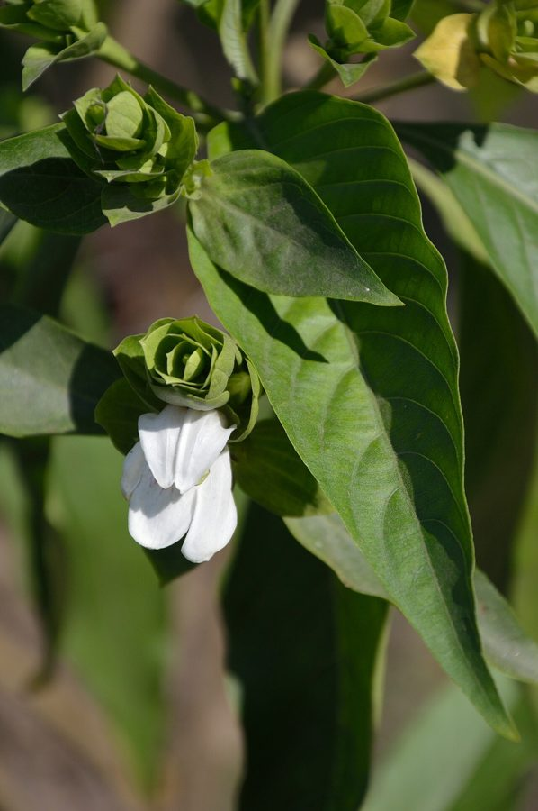

अडूसाAdusa
Justicia adhatoda · Acanthaceae · FLR-0129

- Scientific nameवैज्ञानिक नाम
- Justicia adhatoda L.
- Familyकुल
- Acanthaceae
- Hindiहिंदी
- अडूसा
- Local namesस्थानीय नाम
- adusa, adoosa, arusa, vasaka, adulsa
- Status hereयहाँ की स्थिति
- native
- Movementआवागमन
- Resident, here all year
- IUCNIUCN
- not evaluated
- Reviewसमीक्षा
- audited and independently read
When to look कब देखें
Present all year.साल भर मौजूद।
Uses and possibilities उपयोग और संभावनाएँ
“Traditional medicine” means a documented traditional use, not a claim that it works. Nothing on this page is medical advice.
Drawn from the documented uses in the profile below, where each is labelled traditional, current or a research lead. All uses →
अडूसा / Adusa
Justicia adhatoda L. — Acanthaceae
अडूसा — सूखी जमीन की झाड़ी, जिसके बड़े, हरे पत्ते और सफेद-बैंगनी फूलों के घने गुच्छे होते हैं। पत्तियों को रगड़ने पर कड़वाहट देने वाली सुगंध आती है। दवाई में खाँसी और सर्दी के लिए परंपरागत रूप से काम आती है। पूरे मैदानी इलाकों में और गाँव के किनारे आम दिखती है।
Quick Identification त्वरित पहचान
| Feature | Description |
|---|---|
| Size | Evergreen to semi-deciduous shrub 1–2 m tall |
| Leaves | Elliptic-oblong, 10–20 cm long, dark green, smooth, opposite |
| Flowers | White with purple veins, two-lipped, in dense terminal spikes |
| Fruit | Capsule, oblong, 1.5–2 cm, containing flattened seeds |
| Stem | Quadrangular, smooth |
| The test | Crush a leaf; bitter taste and distinctive smell |
Field tip: A sturdy, dark-leaved shrub with stout white-and-purple flower spikes (Dec–Feb). Look in dry scrub and field margins. The large, glossy leaves and pale flowers are distinctive.
हिंदी — कैसे पहचानें: भारी झाड़ी, बड़ी, चमकदार, हरी पत्तियाँ, और सफेद-बैंगनी फूलों के घने खड़े गुच्छे। पत्ती कड़वी, गंध तेज़।
Morphology आकारिकी
Biometrics (semi-wild and cultivated shrubs, northern India):
| Measurement | Range |
|---|---|
| Height | 1–2 m |
| Stem diameter | 1.5–3 cm |
| Leaf length | 10–20 cm |
| Leaf width | 5–10 cm |
| Flower spike length | 10–25 cm |
| Fruit length | 1.5–2 cm |
Stem and branches: Quadrangular, becoming terete with age, smooth, with a pithy core.
Leaves: Opposite, elliptic-oblong, entire, acute at both ends, with a prominent midrib. Upper surface glossy and dark green; undersurface paler. Venation is conspicuous.
Flowers: Slightly zygomorphic, white with purple veins, two-lipped upper lip and three-lobed lower lip. Flowers are arranged in dense terminal spikes. Flowering is profuse during the winter.
Fruit: An oblong, flattened capsule containing 2–4 seeds with hygroscopic trichomes (hairy projections) that help in seed dispersal.
हिंदी: पत्ती विपरीत, बड़ी, चमकदार। फूल सफेद-बैंगनी, दो होठ वाले। फल लंबा, फ्लैट, बीज 2-4।
Behaviour & Ecology व्यवहार और पारिस्थितिकी
Adusa is a shrub of the margins of dry deciduous forests and open woodlands, tolerating both moderately moist and dry soils. It is often planted as a hedge plant because of its denseness and ability to regenerate from lopping. The flowers are visited by long-tongued bees and butterflies seeking nectar. Birds feed on the seeds, though the seed coat is hard and germinability low without treatment.
The shrub is easily propagated from cuttings and is sometimes grown for medicinal purposes.
हिंदी: सूखी-नम दोनों जमीनों पर उगता है। बाड़ की झाड़ी के रूप में उपयोगी। कलम से आसानी से लग जाता है।
Life Cycle / Phenology जीवन चक्र
| Month / season | Event |
|---|---|
| November–December | Bud break and early flowering |
| December–May | Flowering and fruit development |
| May–July | Fruit ripening and dispersal |
| June–September | Semi-dormant; some new growth in monsoon |
Seeds are recalcitrant and should be sown fresh. Young plants may flower in the second year under good conditions. Lifespan 30–50 years.
हिंदी: नवंबर-मई में फूल। बीज के बाल नम होने पर फैलते हैं, जो उन्हें हवा में तितरते हैं।
Associated Species / Interactions संबंधित प्रजातियाँ
- Pollinators: Long-tongued bees (Asian Honey Bee) and butterflies visit the flowers.
- Seed dispersal: Birds feed on mature fruits.
- Hedge companions: often planted with Neem and other woody shrubs for field boundaries.
Pests and Diseases कीट और रोग
- Leaf spots caused by fungal pathogens in humid weather; rarely serious in semi-arid zones.
- Powdery mildew on young leaves in cool, damp conditions.
- No major insect pests reported.
Agricultural / Human Relevance कृषि प्रासंगिकता
Traditional and Ethnobotanical Use (documented uses; not medical advice):
- Respiratory remedy. The leaf extract is recorded in Ayurvedic texts and in folk medicine as a traditional remedy for cough, bronchitis, and asthma. Kirtikar & Basu list it in their materia medica for respiratory complaints.
- Whole plant use. Leaves are used to make a tea or extract. The latex from crushed leaves has been recorded in folk medicine.
Today. Commercial herbal formulations in India include adusa leaf extract, sometimes branded as "Vasaka" in English-language products. It is a component of some traditional cough syrups.
Research direction (a lead, not a result). Phytochemical studies have identified alkaloids and glycosides in the leaves. Preliminary in-vitro studies exist on antimicrobial and expectorant properties, but clinical trials in humans are limited. Whether traditional uses are effective at therapeutic doses is an open question.
हिंदी: खाँसी और सर्दी की दवाई। पत्ती का रस पीते हैं। बाजार में "वासका" के नाम से बिकता है। कड़वा, गर्म तासीर का माना जाता है।
Expected Locally स्थानीय रूप से अपेक्षित
Not a field record. Written from published accounts for eastern Uttar Pradesh. No confirmed local sighting yet — if you have seen it, that is what the atlas needs.
अभी तक स्थानीय पुष्टि नहीं। यह विवरण प्रकाशित स्रोतों से है, किसी अवलोकन से नहीं।
To be expected in dry scrub and field margins across Basti district, and in home gardens where it is sometimes planted as a medicinal herb. The winter flowers make it conspicuous.
Distribution वितरण
Global range: Native to South and Southeast Asia, from India through Malaysia to the Philippines.
In India: Throughout the peninsula and the Gangetic plain, from the foothills to the semi-arid zones.
In Uttar Pradesh: Widespread in semi-arid and dry areas.
In Basti district / eastern UP: To be expected in dry scrub and field margins.
Research Questions शोध प्रश्न
Anyone can investigate these | कोई भी इन प्रश्नों की जाँच कर सकता है
- How many flowers does a single spike produce, and how long does each flower stay open? — Count flowers on several spikes; observe one spike for several days.
- What insects visit the flowers, and do they carry pollen to other plants? — Collect insects visiting flowers; examine them for pollen grains under a lens.
- Does an adusa leaf extract really reduce cough in a person with a cold, or is it just tradition? — This requires a proper medical trial, not a school project.
- How many seeds does one fruit produce, and what is the germination rate? / एक फल से कितने बीज आते हैं, और उनकी अंकुरण दर कितनी है? — Collect fruits; count seeds; soak and sow them.
- Can a cutting taken in January root more quickly than one taken in July? — Plant cuttings; measure success rates by month.
Similar Species मिलती-जुलती प्रजातियाँ
| Species | How to tell apart | हिंदी |
|---|---|---|
| ruellia (Ruellia brittoniana) | Smaller leaves, flowers are solitary and blue-purple, not in dense spikes | छोटी झाड़ी, अकेले फूल |
| Black-eyed Susan (Thunbergia alata) | A climber, not a shrub; flowers solitary with a dark centre | बेल, गुलाब जैसे फूल |
| Water hyssop (Bacopa monniera) | Much smaller, creeping, flowers tiny and blue; aquatic or semi-aquatic | पानी की पत्ती, छोटे नीले फूल |
Field rule: A sturdy shrub with large, glossy, opposite leaves and dense white-and-purple flower spikes is adusa.
Taxonomy & Classification वर्गीकरण
Original description. Described by Linnaeus in 1753 in Species Plantarum, Vol. 2, p. 635. The vernacular name was given in the Hortus Malabaricus (1688).
Subspecies. Monotypic — no subspecies are currently recognised, though some populations show variation in leaf size.
Family and order placement. Acanthaceae, the acanthus family, in the order Lamiales. The genus Justicia holds over 500 species, mostly tropical.
Phylogenetic notes. Justicia adhatoda is one of the Old World species of the genus, closely related to other South Asian species.
IUCN status rationale. Not evaluated. Widespread and locally cultivated.
Photo Gallery फोटो गैलरी
Photos needed आवश्यक फोटो
- [ ] Whole shrub in flower (पूरी झाड़ी)
- [ ] Close view of flower spike (फूलों का गुच्छा)
- [ ] Leaf detail showing size and venation (पत्तियाँ)
- [ ] Ripe fruit capsule (फल)
No photos yet — add field photos to media/species/adusa/ and run node scripts/sync_photos.js.
References संदर्भ
- Linnaeus, C. (1753). Species Plantarum, Vol. 2, p. 635. Laurentii Salvii, Holmiae. [original description]
- Hooker, J.D. (1885). The Flora of British India, Vol. 4. L. Reeve, London.
- Kirtikar, K.R. & Basu, B.D. (1935). Indian Medicinal Plants, 2nd ed., vol. 2. Lalit Mohan Basu, Allahabad.
- Duthie, J.F. (1903). Flora of the Upper Gangetic Plain and of the Adjacent Siwalik and Sub-Himalayan Tracts. Government Printing, Calcutta.
- Pandey, R., Banerjee, S. & Sawraj, S. (2013). Ethnobotanical and pharmacological importance of Justicia adhatoda: A review. Journal of Natural Remedies 13(1): 39–47.
- GBIF Occurrence Data — Justicia adhatoda, India (2026).
Source file: species/flora/shrubs/adusa.md